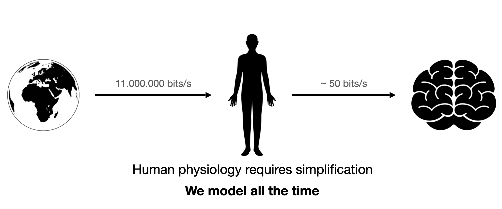
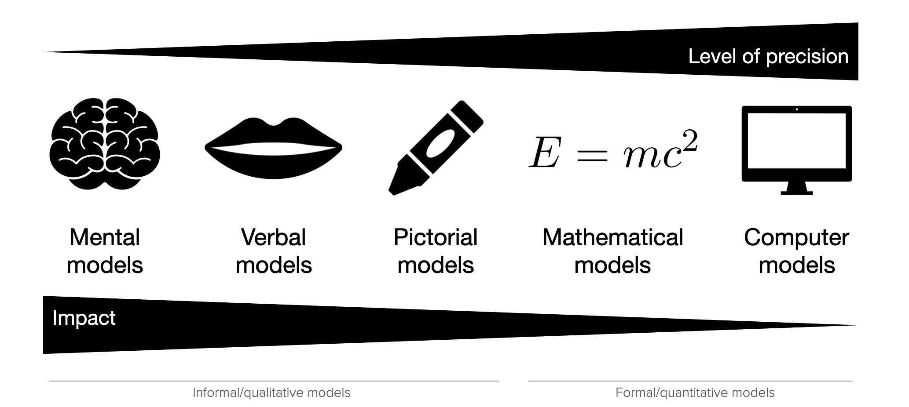
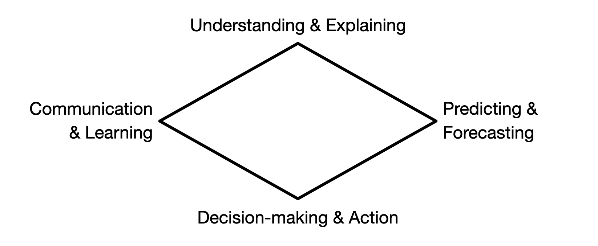
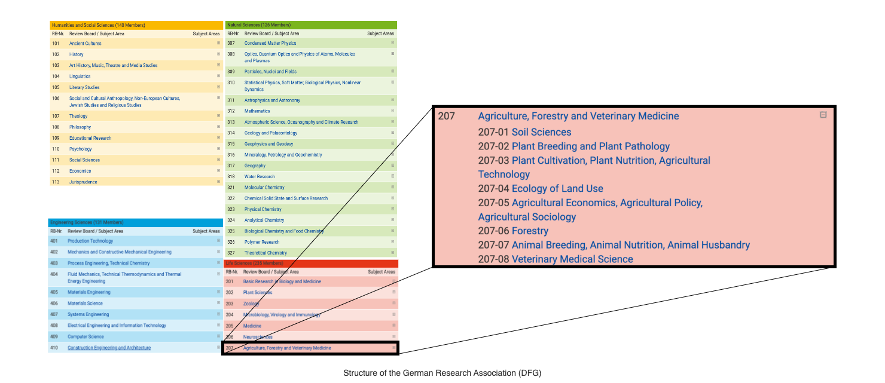
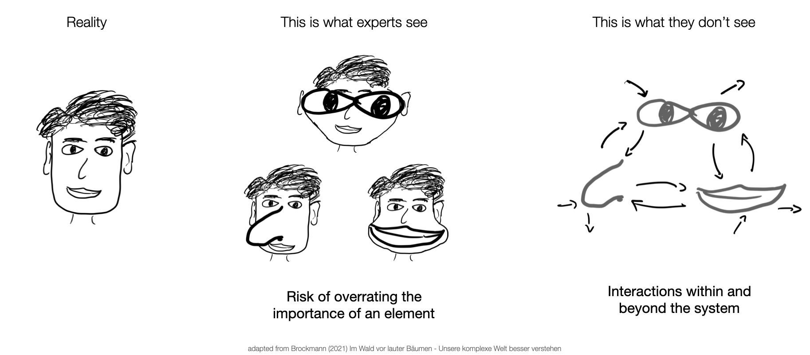
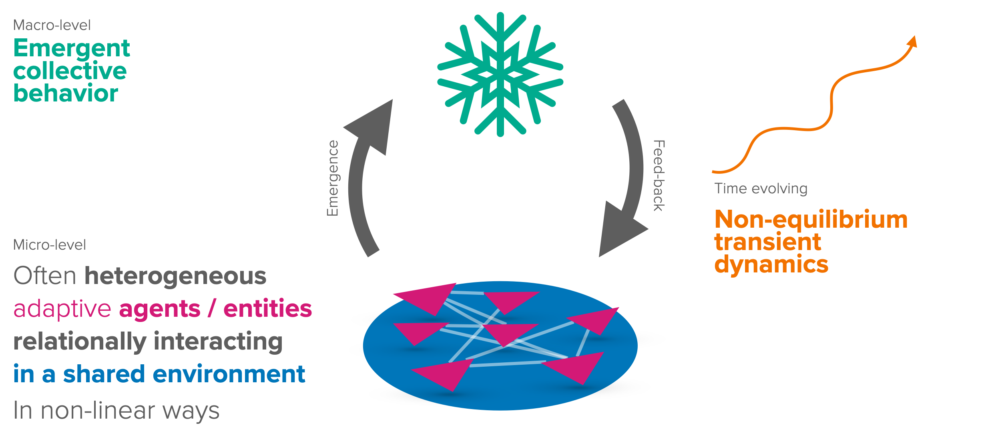
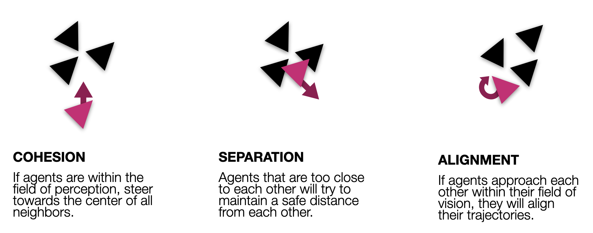
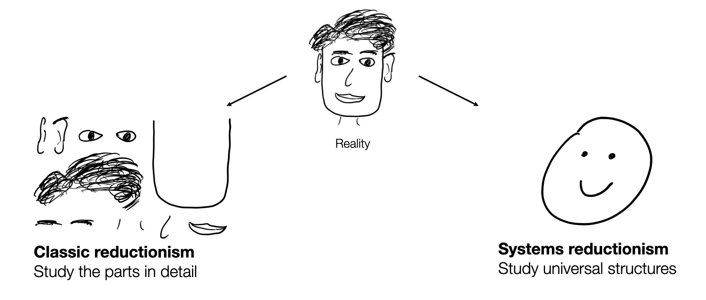
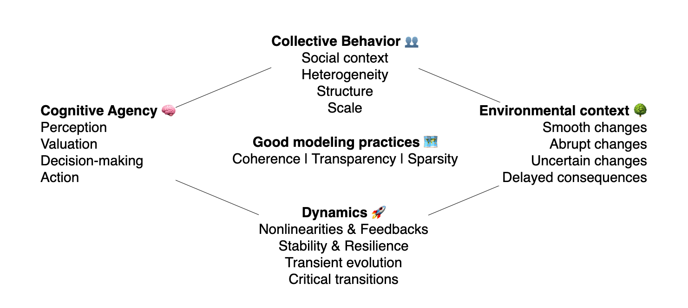
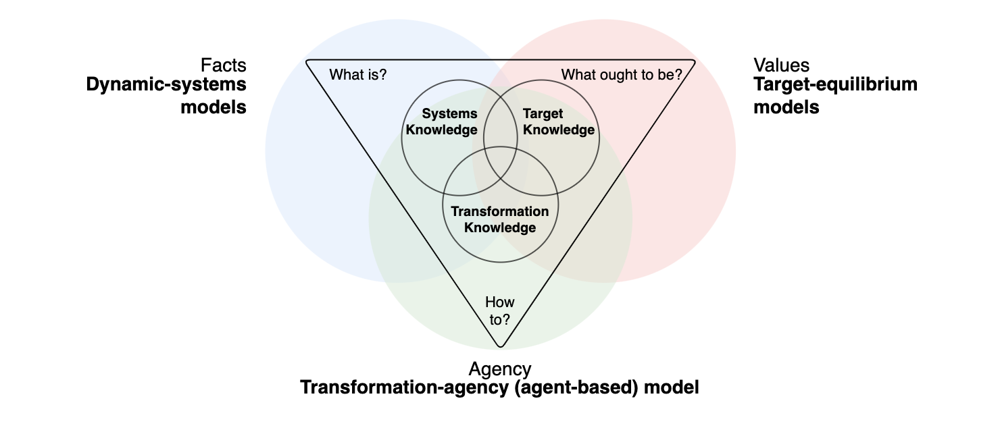

1 Sustainability Systems Science
Wolfram Barfuss | University of Bonn | 2025/2026 | >>Open in GoogleColab<<
▶ Complex Systems Modeling of Human-Environment Interactions
This chapter introduces the basic rationale for sustainability systems science, i.e., complex systems modeling and its application to human-environment interactions and sustainability transitions.
Learning goals
After this chapter, students will be able to explain:
- Why sustainability transitions require a coupled systems approach?
- Why we must model, and how do it well?
- Systems reductionism and its relation to complex systems.
- Structural challenges for sustainability transitions and three types of models to tackle them.
1.1 Human-environment interactions for sustainability transitions
The state of the planet
Watch this TED talk by Johan Rockström, who offers the 2024 scientific assessment of the state of the planet and explains what must be done to preserve Earth’s resilience to human pressure.
While watching, ask yourself the following questions (and make notes around your answers):
- What are the main challenges facing humanity in the 21st century?
- In which ways humans and the environment are interconnected?
- What is the most impressive fact you learned from the talk?
Why are we not acting?
Given the rather grim assessment of the planet’s state, the question arises: Why are we not acting more toward a safe and just future for all
- despite all the scientific progress we have made so far,
- despite all the knowledge about the risks and undesirable consequences ahead if we do not change our course of action,
- despite all the knowledge we have obtained about possible solutions?
Reflect on this question on your own. Come up with a list of factors most relevant to you.
A failure of systems thinking?
According to John Sterman, professor and director of the MIT System Dynamics Group, the underlying issue of inaction in the sustainability crises is a massive failure of systems thinking.
Watch the part of his talk (from minutes 12:19 until 14:17) where he explains this failure and compare his assessment with your own from above. Did he miss some critical factors? How can we complement his assessment?
These lecture notes offers a comprehensive and opinionated, but foremost, practical introduction to the field of complex systems modeling applied to human-environment interactions and sustainability transitions.
1.2 Modeling
We cannot not model
In information theory, a bit (i.e., a 0 or a 1) stores the answer to a yes-or-no question. We can measure the rate of information transmitted with the number of bits per second.

For example, it is known that our senses gather some 11 million bits per second from the environment (britannica.com). When applied to the human brain, you expect it to show tremendous information processing capability.
Interestingly, when researchers attempted to assess information processing capabilities during “intelligent” or “conscious” activities—like reading or playing the piano—they found a maximum capability of under 50 bits per second (Figure 1.1). For instance, a typical reading speed of 300 words per minute translates to about five words per second. Assuming an average of five characters per word and roughly two bits per character results in that 50 bits per second figure. The precise number can vary based on assumptions and may differ according to the individual and the specific task.
Thus, a tremendous amount of compression occurs if 11 million bits are reduced to less than 50. Our human physiology requires simplifaction. We model all the time. Note that the discrepancy between the amount of information being transmitted and the amount of information being processed is so large that any inaccuracy in the measurements is insignificant.
All models are wrong
A model is a simplified representation of reality.
A model’s simplification is necessary to make the phenomenon under question tractable and understandable. Simplifaction here is a feature, not a bug (Smaldino, 2017). The purpose of a model is to be wrong.
The models we use come in different forms or media.

Some are informal and qualitative, while others are more formal and quantitative (Figure 1.2). Mental models are intuitive and often subconscious. Verbal models describe concepts through language. Both model media can be vague and open to multiple interpretations, giving an illusion of understanding without precise clarity (Smaldino, 2017). Furthermore, the last 100,000 years of evolution have shaped Homo sapiens in ways that make it difficult for us to comprehend a dynamic, unstable, and unpredictable world. Our brains evolved to manage immediate, short-term situations and anticipate gradual, linear changes with a tendency to seek balance and stability (Raworth, 2017). Thus, we must make a conscious effort to overcome these cognitive priors. Formal models can help with that.
Pictorial models enhance understanding through visual representations. Take, for example, maps, and diagrams, but also artistic paintings. Mathematical models use equations to quantify relationships, providing greater precision. Computer models require the highest level of precision; all entities and causal mechanisms must be defined unambiguously to allow a computer simulation to operate. This high level of precision makes them essential for scientific research and understanding. However, our subconscious mental models often have the highest impact on how we perceive and act in the world.
Thus, we will develop primarily formal mathematical and computational models in this book. However, this will automatically refine our mental and verbal models.
The challenge of informal models
Proverbs are a good example of mental models that are passed down through the generations. They concisely convey wisdom. However, they are often contradictory and provide no guidance on how to act. For example, consider the following proverbs (Page, 2018):
Proverb: Tie yourself to the mast
Opposite: Keep your options open
Proverb: The perfect is the enemy of the good
Opposite: Do it well or not at all
Proverb: Actions speak louder than words
Opposite: The pen is mightier than the sword
The power of informal models
To illustrate the power of mental models, consider the following riddle:
A father and son are in a horrible car crash that kills the dad. The son is rushed to the hospital; just as he’s about to go under the knife, the surgeon says, “I can’t operate – that boy is my son!”
How can this be?
Regardless of how obvious (or not) the answer appears to you, watch this video in which people in Vienna are asked this question (Autotranslation helps if you do not speak German). Observe their reactions when their mental models are updated (from minute 1:38 on).
We observe that modeling is an iterative process. When recognizing a mismatch between our models and reality, we get the opportunity to refine our models, and so gradually, we might become less wrong (Smaldino, 2017). Creating formal models of the systems we care about is the only method to achieve this in a structured, deliberate, and controlled manner.
However, as it is the defining feature of a model to simplify or, in other words, to be wrong, making them more true cannot be the purpose of a model per se. But, what makes a model useful?
Some models are useful
There is no universally agreed-upon classification of model use cases. I tend to distinguish between four clusters of model use cases (Figure 1.3): 1) Understanding & explaining, 2) Communication & learning, 3) Prediction & forecasting, and 4) Decision-making & action.

Understanding & Explaining
Understanding and explaining phenomena may occur in various ways. For example, models help clarify assumptions (Smaldino, 2017), allowing for a more transparent assessment of their implications and conclusions. Models help us to reason, i.e., to identify conditions and deduce logical implications. They also can provide (testable) explanations for empirical phenomena. (Page, 2018) And, models are helpful to explore, i.e., to consider different “what if” scenarios to investigate possibilities and hypotheticals (Page, 2018; Smaldino, 2017).
Communication & Learning
Formal models can serve as tools to overcome our cognitive limitations. They help in systematizing and synchronizing our understanding, ensuring that we discuss the same concepts and avoiding ambiguity that often accompanies verbal models.(Smaldino, 2017) Models can guide scientific questions. The precise specification of components and their relationships in a model helps clarify scientific questions and distinguishes them from unfalsifiable pseudo-theories (Smaldino, 2017).
Prediction & Forcasting
Prediction refers to making numerical and categorical predictions of future and unknown phenomena. Historically, explanation and prediction were often linked closely together. However, prediction differs from explanation. A model can predict without explaining. Deep learning algorithms can predict product sales, tomorrow’s weather, price trends, and specific health outcomes; however, they provide minimal explanation. Also, a model can explain without predicting. Ecology models can explain speciation patterns but cannot predict new species (Page, 2018). Related concepts to prediction are forecasting and projections, which can mean various things in different contexts.
Decicion-making & Action
Formal models help design institutions, policies, and rules by providing frameworks for contemplating the implications of choices. Combining this process with empirical data, formal models are helpful for action, guiding policy choices and strategic actions of governments, corporations, and nonprofits (Page, 2018). Likewise, good mental models are helpful for good actions in our everyday lives.
It is important to note that, in general, a single model does not fulfill all use cases.
Some models might do, like, for example, Newtonian mechanics. It explains the motion of objects, predicts their future positions, guides the design of machines, and is learned in schools worldwide. However, in most instances, this is not the case. A model might explain a phenomenon but cannot predict it or vice versa. A helpful model for decision-making might neither make accurate predictions nor explain the underlying mechanisms. Take macroeconomic models as an example.
Beyond being useful or not, are there some quality criteria a good model should fulfill?
Some models are good
I argue that there are some quality criteria that make a model a good model. A good model must be
- coherent
- transparent, and
- sparse.
Coherence
Coherence means that the model is consistent. It does not contain contradictions or logical errors. Consider, for example, the proverbs from above.
A model can resolve these contradictions by specifying the conditions under which a particular statement holds. For example, under some conditions, it is best to tie yourself to the mast, while under others, it is best to keep your options open. A model can help to clarify these conditions.
This requirement of coherence or consistency imposes a set of helpful constraints within which the model development can take place.
Transparency
A good model makes its assumptions explicit and transparent. It also openly discusses its limitations. Bonus points if the model is transparent about uncertainty in empirical data, parameters, and processes. Transparency is a prerequisite for a model to be useful for communication and learning.
Sparsity
You should take the simpler model if you have two competing models of equal quality regarding their use case. This is also known under the term Occam’s razor or the principle of parsimony. This principle helps us avoid going overboard with introducing new assumptions, entities, and processes into our models, making our models overly complex and difficult to understand without further benefit. However, sometimes, during the modeling process, we are unsure whether a newly introduced assumption is helpful to explain the phenomenon under question. Thus, for model development, the principle of parsimony is a guideline, not a strict rule. As the famous saying goes
You should make things as simple as possible, but not simpler.
1.3 Systems reductionism
Given that we cannot not model, how should we make sense of the world?
Classical reductionism
With classical reductionism, I refer to the ideas of rationalism and empiricism that have dominated Western science since the last great transformation, the Enlightenment. Replacing religious dogmatism, this view argues, that
the whole can be understood from its parts.
For example, this approach has been highly successful in physics and chemistry, where the behavior of atoms and molecules can be understood by studying their interactions.
As a result, scientific disciplines tend to be hierarchically clustered around specific parts of the whole. For example, the German Research Association (DFG) clusters disciplines around the engineering, life, natural, and humanities and social sciences (Figure 1.4). Within each cluster, there are multiple disciplines with subdisciplines.

Classical reductionism produced a lot of experts. Together, they drove the massive increase in wealth, health, and knowledge in the last 200 years.
The problem with experts
Experts carry a risk of overrating the importance of their area of expertise (Brockmann, 2021). At the same time, experts tend to overlook the interactions within and beyond the system under investigation (Figure 1.5).

These problems with classical experts become particularly problematic in complex systems, which are characterized by their interactions.
Complex systems
The study of complex systems started around the 1950s and has been a diverse endeavor since then. See, for example, the map of complexity science.
In a complex system,
the whole is more than the sum of its parts.
The whole, the so-called macro-level, emerges from and feeds backs to the so-called micro-level, in which (often many, heterogeneous) entities or agents interact (in often non-linear ways) in a shared environment. Both levels are out-of-equilibrium, continuously evolving (Figure 1.6).

To illustrate the idea of emergence, where the whole is more than the sum of its parts, consider the following quote:
“There’s no love in a carbon atom,
No hurricane in a water molecule,
No financial collapse in a dollar bill.”
– Peter Dodds
To observe a complex system in action, enjoy a video of bird flocking behavior. A century ago, the wonders of these highly coordinated yet leaderless flocks led people to believe that telepathy might be what guided these birds (phys.org).
See complexityexplained.github.io for more background information on complexity science.
So, what can we do to make sense of complex systems, given our limited information processing capacity and the consequences that we cannot not model?
Systems reductionism
To quote one of the founding fathers of complexity science,
“It may not be entirely vain, however, to search for common properties among diverse kinds of complex systems”
– Herbert Simon
As it turns out, flocking behavior, for example, can be explained by just three rules: separation, alignment, and cohesion (wikipedia.org/boids, Figure 1.7).

Systems and classic reductionism complement each other (Figure 1.8). While classical reductionism helps understand the parts of a system, systems reductionism helps understand the interactions between these parts. Collaboration between the two approaches is key.

Conceptually, complex systems modeling combines the practice of (formal) modeling with the ideas of systems reductionism.
1.4 Sustainability Systems Modeling
This section conceptually synthesizes the practice of complex system modeling applied to the problem field of sustainability transitions and human-environment interactions.
Structural challenges
To operationalize systems thinking for human-environment modeling, we require a collection of the structural elements and processes that either hinder or may foster action toward sustainability.
Summarizing many fantastic review and perspective papers (Constantino et al., 2021; Elsawah et al., 2020; Farahbakhsh et al., 2022; Giupponi et al., 2022; Levin & Xepapadeas, 2021; Müller et al., 2020; Schill et al., 2019) we obtain the following list of structural challenges for sustainability transitions (Figure 1.9): Complex system models of human-environment interactions must account for the dynamics of the collective behavior emerging from cognitive agents within an environmental context (Barfuss et al., 2024). They must also adhere to the good modeling practices of coherence, transparency, and sparsity, as discussed above.

Cognitive agency 🧠
Improving the representation of human behavior in models of social-ecological systems and human-environment interactions is a critical challenge (Constantino et al., 2021; Schill et al., 2019; Schlüter et al., 2017). Humans are neither hyper-rational nor overly simplistic, as many models assume. At the very least, they are cognitive agents who perceive their current environmental context, evaluate it and their options, make decisions, and act accordingly.
Environmental context 🌳
The environmental context refers to the decision-making challenge the agents face. The environmental context is not static. It may change smoothly or abruptly, based on human activities or via inherent dynamics. For example, climate damages gradually worsen with increasing global mean temperature. And crossing climate tipping points may abruptly lead to catastrophic outcomes. Furthermore, these changes are not certain but stochastic in nature and may only be partially observable by humans. And often, the consequences of action are heavily delayed, impacting future generations. All these attributes make collective action for sustainability transitions tremendously challenging.
The environmental context includes the biophysical environment, such as the climate, biodiversity, and resources, as well as the social environment, out of which the collective behavior emerges.
Collective behavior 👥
From cognitive agents within an environmental context, collective behavior emerges. This collective behavior depends on the social context, the heterogeneity of the agents, the interaction structure between them, and the scale on which they operate. Collective behavior refers to the dynamics of the system as a whole, which are not easily reducible to the characteristics of individual agents.
Dynamics 🚀
Our primary goal is to comprehend and advance sustainability transitions. Transitions are fundamentally dynamic in nature, so our modeling approach must reflect this dynamism, integrating non-linear feedback loops and critical transitions. Furthermore, the concepts of stability and resilience demand a dynamic viewpoint. Before a system reaches stability, its transient evolution offers crucial insights into the sustainability transitions itself.
How can we begin to make sense of this all?
What precisely do all of these elements mean?
And how do all of these elements relate to each other?
These questions will guide us through the following chapters.
We will tackle them with the help of a useful framework from transdisciplinary research: the three types of knowledge, applied to modeling.
Three types of models
When addressing societal challenges, the concept of the three types of knowledge helps to produce not only knowledge on problems but also knowledge that helps to overcome those problems (Buser & Schneider, 2021). In general, the concept applies to all research methodologies. We will specifically discuss it in the context of formal modeling, transforming it into three types of models (Figure 1.10).

The three types of models are:
Dynamic-systems models
Dynamic-systems models operationalize systems knowledge, typically understood as knowledge concerning the existing system or issue. This understanding is primarily analytical and descriptive. For instance, in the context of sustainability transitions, systems knowledge assesses the risk triggering climate tipping points, biodiversity loss dynamics, or a specific region’s social-ecological dynamics. Systems knowledge is strongly associated with facts and asks what is?
In this regard, dynamic-systems models are often used to understand the system’s behavior under specific conditions.
We will discuss dynamic-systems modeling in the first part of these lecture notes, covering
- Nonlinearity and feedback loops in Chapter 02.01 [Oct 28, 2025]
- Tipping elements and regime shifts in Chapter 02.02 [Nov 4, 2025]
- Resilience in Chapter 02.03 [Nov 11, 2025], and
- Stochastic state transitions in Chapter 02.04 [Nov 18, 2025].
Target-equilibrium models
Target-equilibrium models operationalize target knowledge, which is knowledge about the desired future and the values that indicate which direction to take. It relies on deliberation by different societal actors and is based on values and norms. In sustainability transitions, ways of producing target knowledge include participatory vision, scenario development with a wide range of stakeholders, and the public discourse at large. Target knowledge is strongly associated with values and asks what ought to be?.
Target-equilibrium (or equilibrium-based models applied to sustainability transitions) are primarily used in economics. In theory, the equilibrium is the outcome of an optimization procedure where the specified normative target is reached.
We will discuss target-equilibrium modeling in the second part of the book, covering
- Sequential decisions of a single agent in a dynamic environment in Chapter 03.01 [Nov 25, 2025],
- Strategic interactions of multiple agents in a static environment in Chapter 03.02 [Dec 2, 2025], and
- Strategic interactions of multiple agents in a dynamic environment in Chapter 03.03 [Dec 9, 2025].
Transformation-agency models
Transformation-agency models operationalize transformation knowledge, which is knowledge about how to move from the existing system to the desired future. This knowledge includes concrete strategies and steps to take. In sustainability transitions, producing transformation knowledge could involve developing policy instruments, designing new institutions, or implementing new technologies. Transformation knowledge is strongly associated with agency and asks how to?.
Transformation-agency models (or agent-based models applied to sustainability transitions) are a flexible tool that combines the dynamics of how to get to a desired outcome with agency that defines what is desirable and possible to do.
We will discuss transformation-agency modeling in the third part of the book, covering
- Rule-based behavioral agency in agent-based models in Chapter 04.01 [Dec 16, 2025],
- Individual reinforcement learning in Chapter 04.02 [Jan 13, 2026], and
- Collective reinforcement learning [Jan 20, 2026].
Synthesis
It is important to note that the three knowledge types are interdependent. For example, knowledge about ‘how to’ would be of limited use or even dangerous if it was not oriented toward desirable target values and based on sound facts. In the same vein, we will integrate the different types of models toward the end of the course.
Non-linear dynamics of reinforcement learning in Chapter 04.03 [Jan 27, 2026].
Special winter workshop session [Tue, Dec 23, 2025 and Wed, Jan 7, 2026]
Recap workshop sessions [Feb 3, 2026]
1.5 Learning goals revisited
- Understanding and promoting sustainability transitions requires a coupled human-environment systems approach, as the challenges and possible solutions are tightly coupled between humans and the biosphere.
- Limited human information processing demands us to model the world around us. Formal models help overcome imprecise mental models and cognitive limitations. Models are helpful for understanding, communicating, predicting, and making decisions. Good models are coherent, transparent, and sparse.
- Systems reductionism complements classical reductionism to avoid unintended side effects in complex systems. Complex systems are characterized by interactions, emergent properties, and feedback loops.
- Complex systems models of human-environment interactions must account for the dynamics of the collective behavior emerging from cognitive agents in environmental contexts. Three types of models, dynamic-systems model, target-equilibria models, and transformation-agency (agent-based) model, will help us achieve these desiderata.
The exercises for this chapter offer a thorough introduction to the programming language Python, preparing you for the modeling exercises in the subsequent chapters.